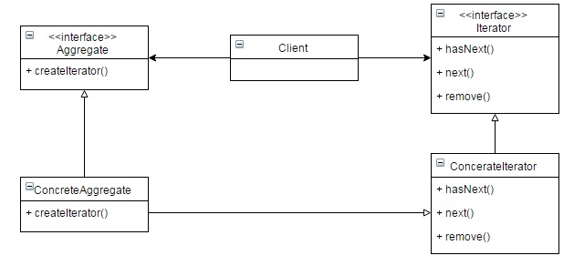
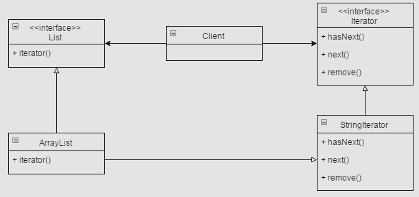

Iterator Pattern by Juicyroach
Posted on May 31, 2015 at 12:00 PM

● 目地 : 取得一個Collection內部的每個元素，且不需將取出的方式暴露在外
● 使用時機 : 巡迴List、Map或陣列等等...
● 想法 : 能有一個統一的界面，讓他巡迴過內部所有的物件而不必知道是以何種Collection，並將不同的Collection巡迴方式實體化。
● UML :
● 程式與解說 :
首先要有一個統一的介面iterator，裡面放入對外需要的hasNext與next方法
public interface Iterator {
public boolean hasNext();
public Object next();
}
接著針對被巡迴的物件實做巡迴的方式。
public class StringArrayIterator implements Iterator {
private String[] inputString;
private int position = 0;
public StringArrayIterator(String[] inputString) {
this.inputString = inputString;
}
@Override
public boolean hasNext() {
if (position >= inputString.length || inputString[position] == null) {
return false;
} else {
return true;
}
}
@Override
public Object next() {
String text = inputString[position];
position++;
return text;
}
}
此時我們已經有了巡迴的介面與實作巡迴方式。
接著，我們通常會在被巡迴的物件加入升成iterator的方式。
(以上面巡迴String陣列為例，我偷偷用一個自己寫的Collection包起，不是正確的做法)
public class StringCollection {
private String[] inputString;
public StringCollection(String[] inputString) {
this.inputString = inputString;
}
public Iterator createIterator() {
return new StringArrayIterator(inputString);
}
}
最後對Client來說，我們只要有物件Collection，就可以生成Iterator，就可以巡迴囉。
public class Client {
public static void main(String[] args) {
String[] inputString = new String[] { "1", "2", "3" };
StringCollection collection = new StringCollection(inputString);
Iterator iter = collection.createIterator();
while (iter.hasNext()) {
String obj = (String) iter.next();
System.out.println(obj);
}
}
}
這個pattern幾乎很少在實作使用了。因為Java已經寫入Collection當中，無論是List、Set等等皆有。所以常見的寫法會是如下
public class Client {
public static void main(String[] args) {
List<String> list = new ArrayList();
list.add("1");
list.add("2");
list.add("3");
java.util.Iterator<String> iter = list.iterator();
while (iter.hasNext()) {
String text = iter.next();
System.out.println(text);
}
}
}
對應到的UML就是如下!
